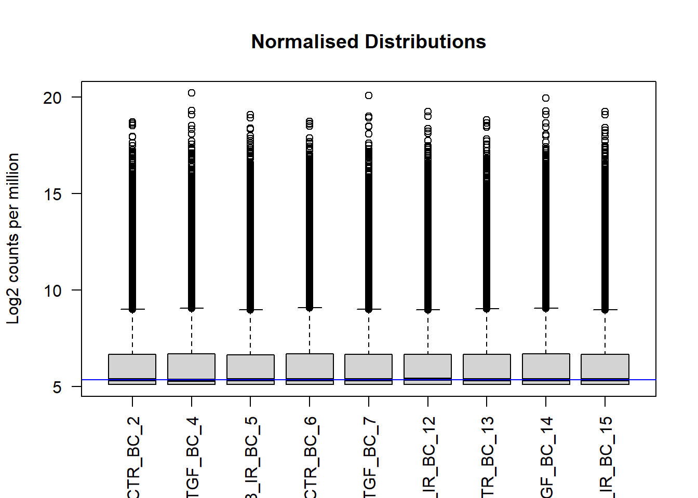

source("https://raw.githubusercontent.com/markdunning/markdunning.github.com/refs/heads/master/files/training/bulk_rnaseq/install_bioc_packages.R")Introduction to RNA-Seq - Part 1
Overview
Importing “raw” RNA-seq counts into R and performing quality assessment
Pre-amble
High-throughput sequencing is now established as a standard technique for many functional genomics studies; allowing the researcher to compare and contrast the transcriptomes of many individuals to obtain biological insight. A high-volume of data are generated from these experimental techniques and thus require robust and reproducible tools to be employed in the analysis.
In this workshop, you will be learning how to analyse RNA-seq count data, using R. This will include reading the data into R, quality control and performing differential expression analysis and gene set testing, with a focus on the well-respected DESEq2 analysis workflow. You will learn how to generate common plots for analysis and visualisation of gene expression data, such as boxplots and heatmaps.
Note
We will be discussing Bulk RNA-seq only, although some of the methods and techniques will be applicable to single-cell RNA-seq. I am planning some materials on single-cell RNA-seq in the future. In the meantime, the homepage for Seurat (a popular R package for single-cell analysis) has lots of useful tutorials.
Quick Start
I will go through the setup in quite a bit of detail. If you are already fairly confident with R, you can probably skim this and proceed to the start of the pre-processing section.
- Create a new RStudio project that you want to work in
- Create folders called
meta_dataandraw_counts - Download the meta data and raw counts
- Place the
sampleInfo.csvandraw_counts_matrix.tsvfiles intometa_dataandraw_countsfolders respectively - Install some R packages using this command
Setup
You will need to install some R packages before you start, which I usually do this at RStudio’s console. See the below screenshot.

Rather than typing the location of the install script I suggest copying from here:-
source("https://raw.githubusercontent.com/markdunning/markdunning.github.com/refs/heads/master/files/training/bulk_rnaseq/install_bioc_packages.R")It may take a few minutes, but you will only have to do this once for a specific version of R. To check that everything worked, now copy and paste the following command. It should print messages to the screen to say that all the packages were installed
source("https://raw.githubusercontent.com/markdunning/markdunning.github.com/refs/heads/master/files/training/bulk_rnaseq/check_packages.R")I also recommend creating a new project to work through the tutorial. You can do this via the file menu in Rstudio and it will ask you to choose a directory on your hard drive that you want the project to be located in. Briefly, using “projects” is a convenient way of keeping all the input data, R code, and outputs for a particular analysis together in the same place.
File -> New Project -> New Directory

In the screenshot, I am using a directory (which doesn’t exist at this point) called bulkrnaseq_tutorial in c:\work\personal_development. RStudio should now refresh and your working directory will be the location that you specified. Now we will use some code to download the example data. Again, I suggest you copy from below rather than typing manually.
## Create two folders for the meta data and counts
dir.create("meta_data", showWarnings = FALSE)
dir.create("raw_counts",showWarnings = FALSE)
## Download the raw data files
download.file("https://raw.githubusercontent.com/markdunning/markdunning.github.com/refs/heads/master/files/training/bulk_rnaseq/meta_data/sampleInfo.csv", destfile = "meta_data/sampleInfo.csv")
download.file("https://raw.githubusercontent.com/markdunning/markdunning.github.com/refs/heads/master/files/training/bulk_rnaseq/raw_counts/raw_counts_matrix.tsv", destfile = "raw_counts/raw_counts_matrix.tsv")Hopefully your screen should look a bit like this:-

Finally, create a new “Quarto Document” from the File menu
File -> New File -> Quarto Document

Clicking the “Create Empty Document” button on the pop-up that appears will create a blank quarto document that you can use to type the code from this tutorial, and any comments you may wish to make along the way. The Title and Author boxes can be filled with anything you like. They are used when you want to create a report document from your code. A new panel should appear in RStudio which is your bare bones analysis. The title and author lines should correspond to the text you entered (if any) when creating the document
R code can be added to this document by clicking the “Insert Code Chunk” toolbar option

This will give you space to type or paste R code from the tutorial. In the below screenshot, R code can be entered between lines 8 and 10. Pressing ENTER between these lines will allow more code to be written. Pressing CTRL + ENTER causes the code to be run.

Lines outside of a code chunk can be used to write any explanations or interpretations of the plots, stats that you produce along the way.
At this point you are working on an untitled document that is not saved to disk. Go through the menu File -> Save and choose a file name
RNA-seq processing
In this short section, we will briefly describe the pre-processing of RNA-seq data which is not typically done in R. If you are only interested in using R, you may skip to the next section.
There are many steps involved in analysing an RNA-Seq experiment.

(Workflow image from Harvard Bioinformatics Core)
Analysing an RNAseq experiment begins with sequencing reads. These are large (typically several Gb) that contain information on the sequences that have been generated for each biological sample; one fastq (or pair of fastqs) for each sample. Each set of four lines describe one sequence (called a “read”).
A typical RNA-seq experiment will have 10 - 30 million reads in a fastq file, with each read about 100 bases long. e.g.
@D0UW5ACXX120511:8:1204:6261:40047/1
AATGTTTATGTTCTTAAATTTTAGTTGTATATGTGAATCTTTGTAGTTTTTGCTAAAATACTAAGTAATTTATATAAAAGTGAGTTAAGAGATTTTTCTGA
+
CCCFFFFFHHHHHJJJJJIJJJJJIJJHIIJIJIJJIJJJIJJHIIHIJJJJJJBEGIHIJICGIDICFGIJJJIIJJGJ>F>GAGCGEEHEHHEEFFFD>As the fastq files are large, we tend to analyse them using command-line software and a computing cluster. The traditional workflow for RNA-seq compares the sequences to a reference genome to see which genomic region each read matches the best.

Again, this requires more memory than a typical laptop or desktop machine so is performed on a remote computer with large memory. The resulting file is called a bam and records the best genomic match for each read. However, as we are interested in gene expression we want to relate these mappings to the positions of genes.
A variety of different counting methods can determine how many reads overlap each known gene region. These are know as the raw counts and are the kind of data we will start with today.

Recent tools for RNA-seq analysis (e.g. salmon, kallisto) do not require the time-consuming step of whole-genome alignment to be performed, and can therefore produce gene-level counts in a much faster time frame. They not require the creation of large bam files, which is useful if constrained by file space (e.g. if using Galaxy).
My strong recommendation would be to use the nextflow workflow system in conjunction with the nf.core pipeline to align and quantify your RNA-seq reads. My former colleague Dr. Lewis Quayle has a really good write-up of using nf.core on his pages
Important
Unless you are doing something extremely novel and bespoke I don’t believe it would be worth writing your own pipeline for processing RNA-seq, or any other sequencing data, from scratch rather than using what is available in nf.core.
Introducing the example dataset
The data for this tutorial comes from the paper, Induction of fibroblast senescence generates a non-fibrogenic myofibroblast phenotype that differentially impacts on cancer prognosis..
Cancer associated fibroblasts characterized by an myofibroblastic phenotype play a major role in the tumour microenvironment, being associated with poor prognosis. We found that this cell population is made in part by senescent fibroblasts in vivo. As senescent fibroblasts and myofibroblasts have been shown to share similar tumour promoting functions in vitro we compared the transcriptosomes of these two fibroblast types and performed RNA-seq of human foetal foreskin fibroblasts 2 (HFFF2) treated with 2ng/ml TGF-beta-1 to induce myofibroblast differentiation or 10Gy gamma irradiation to induce senescence. We isolated RNA 7 days upon this treatments changing the medium 3 days before the RNA extraction.
Note
A really useful resource for obtaining raw sequencing reads is sraexplorer. Given a GEO, ArrayExpress of SRA dataset name it will give you links to download the raw fastq files
Again, Lewis’ page has some commands for downloading these data in fastq form.
Importing RNA-seq data into R
Our starting point will be “counts” that have been generated from our example dataset. This is probably the most common form that you will encounter RNA-seq data out in the wild or with publications. We can read these data using standard R functions to get a first look.
count_file <- "raw_counts/raw_counts_matrix.tsv"
counts <- read.delim(count_file)
head(counts) ENSEMBL X1_CTR_BC_2 X2_TGF_BC_4 X3_IR_BC_5 X4_CTR_BC_6 X5_TGF_BC_7
1 ENSG00000000003 1579 1547 1342 1704 1395
2 ENSG00000000005 0 0 0 0 0
3 ENSG00000000419 1774 1775 1866 1809 1921
4 ENSG00000000457 698 617 601 733 662
5 ENSG00000000460 246 309 116 224 255
6 ENSG00000000938 10 5 11 6 1
X6_IR_BC_12 X7_CTR_BC_13 X8_TGF_BC_14 X9_IR_BC_15
1 1264 1556 1370 1269
2 0 0 0 1
3 1776 1797 1482 1980
4 537 751 593 628
5 108 245 289 127
6 2 19 4 8As R doesn’t like columns that begin with a number, the import has resulted in column names (except the first column) that start with an X. We can remove the X using the following:-
## install stringr if you don't have it already
if(!require(stringr)) install.packages("stringr")Loading required package: stringrcolnames(counts)[-1] <- stringr::str_remove_all(colnames(counts)[-1], "X")The dim function (again part of base R) will tell us the dimensions, which in this case relate to the number of samples (9) and “genes” (57914) included in the data.
dim(counts)[1] 57914 10head(counts) ENSEMBL 1_CTR_BC_2 2_TGF_BC_4 3_IR_BC_5 4_CTR_BC_6 5_TGF_BC_7
1 ENSG00000000003 1579 1547 1342 1704 1395
2 ENSG00000000005 0 0 0 0 0
3 ENSG00000000419 1774 1775 1866 1809 1921
4 ENSG00000000457 698 617 601 733 662
5 ENSG00000000460 246 309 116 224 255
6 ENSG00000000938 10 5 11 6 1
6_IR_BC_12 7_CTR_BC_13 8_TGF_BC_14 9_IR_BC_15
1 1264 1556 1370 1269
2 0 0 0 1
3 1776 1797 1482 1980
4 537 751 593 628
5 108 245 289 127
6 2 19 4 8The first column is used for the gene identifier. A rudimentary task is to identify genes that have different expression level between biological conditions, but such a task may not be possible from the counts alone unless we can be sure how the columns in our counts relate different conditions. i.e. which columns are the control samples. In this case it may be possible to infer this information (as some column names have a CTR in their name), but this may not always be true. There may be other information we need to know such as when each sample was processed or sequenced. For this, we need to also import some sample information aka meta data.
About “metadata”
Modern sequencing devices are truly remarkable machines capable of taking biological material and generating vast amounts of biological sequence. However, they know nothing about the biological context of the experiment taking place - nor do they need to. If you are a researcher requesting sequencing from a Core facility you will typically submit a set of test tubes (containing prepared sequencing libraries) along with a spreadsheet giving a name to each sample. These names can be as simple as “Sample 1”, “Sample 2” etc. When the data come back from sequencing, the raw data will retain the labels “Sample 1”, “Sample 2”. We refer to metadata as the data that describes the biological and technical characteristics of the samples we have sequenced
. Examples of variables recorded in the metadata might include.
- tumour / normal status
- cell line
- age
- gender
- date of collection
- litter
We include the sample groups that we want to compare, and any potential confounding factors that we might need to address as part of our quality assessment. The metadata is stored in a spreadsheet and typically entered by-hand. When creating such data we should be mindful of some best-practice guidelines that will make our data easier to read into R.
Note
See here for a round-up of common errors to be avoiding when creating spreadsheets
The sampleInfo.csv in the meta_data folder contains basic information about the samples that we will need for the analysis today. This includes the ID for the sample ID assigned by the researcher (Run), the experimental condition (condition), shorter name for the sample (Name), the replicate number (Replicate) and whether the sample is a control or treated sample (Treated).
sampleInfo <- read.csv("meta_data/sampleInfo.csv")
sampleInfo Run condition Name Replicate Treated
1 1_CTR_BC_2 CTR CTR_1 1 N
2 2_TGF_BC_4 TGF TGF_1 1 Y
3 3_IR_BC_5 IR IR_1 1 Y
4 4_CTR_BC_6 CTR CTR_2 2 N
5 5_TGF_BC_7 TGF TGF_2 2 Y
6 6_IR_BC_12 IR IR_2 2 Y
7 7_CTR_BC_13 ctr CTR_3 3 N
8 8_TGF_BC_14 tgf TGF_3 3 Y
9 9_IR_BC_15 ir IR_3 3 YIf you want to know how to create such a data frame based on the column names alone (i.e. if no csv file was provided), read the following note.
Inferring the sample information from the count column names
It is sometimes possible to create a meta data spreadsheet if none is available. This relies on the column names of the count matrix being named in a consistent fashion. In this example we can see that the biological group (CTR, TGF or IR) is encoded in the name and the column names contain a _ character. The stringr and tidyr packages include the functionality for dealing cleaning these data.
install.packages("stringr")
install.packages("tidyr")library(stringr)
library(tidyr)
library(dplyr)
## Get the column names of counts - except the first column which is the gene name
cols <- colnames(counts)[-1]
cols [1] "1_CTR_BC_2" "2_TGF_BC_4" "3_IR_BC_5" "4_CTR_BC_6" "5_TGF_BC_7"
[6] "6_IR_BC_12" "7_CTR_BC_13" "8_TGF_BC_14" "9_IR_BC_15" The column names consists of various letters separated by a _. Some of these can be used to form the conditions and replicate information, and the separate function from tidyr is an efficient way of splitting the Run column into different components. The BC and number at the each of the name is not actually useful analysis, so we will remove in the next step. The remove = FALSE argument is used to keep the Run column in the data.
meta <- data.frame(Run = cols) %>%
separate(Run, into = c("Sample Number", "condition", "BC", "X"),remove = FALSE)
meta Run Sample Number condition BC X
1 1_CTR_BC_2 1 CTR BC 2
2 2_TGF_BC_4 2 TGF BC 4
3 3_IR_BC_5 3 IR BC 5
4 4_CTR_BC_6 4 CTR BC 6
5 5_TGF_BC_7 5 TGF BC 7
6 6_IR_BC_12 6 IR BC 12
7 7_CTR_BC_13 7 CTR BC 13
8 8_TGF_BC_14 8 TGF BC 14
9 9_IR_BC_15 9 IR BC 15Now we keep the columns we need, and add the replicate numbers using the rep function to repeat a sequence 1,2,3 three times. The shorter name is formed by pasting the condition and replicate number (using paste with a _ separator. Finally, Treated column is formed using an ifelse statement. This is used to test if a particular value of condition is equal to CTR or not. If it is, a value of N is used in the new Treated column. If not, the value of Y is used instead.
meta <- select(meta, Run, condition) %>%
mutate(Replicate = rep(c(1,2,3), 3)) %>%
mutate(Name = paste(condition, Replicate, sep = "_")) %>%
mutate(Treated = ifelse(condition == "CTR", "N", "Y"))Although we can use basic R commands to read the counts and sample information into R, it is much more common to use specialist software for further analysis. Packages such as DESeq2 (used in this tutorial), edgeR and limma have evolved other many years to offer an efficient way of storing and manipulating complex datasets.
library(DESeq2)The DESeq2 allows data to be imported from various formats, and the option we will be using here is that of a counts matrix. The “vignette” for DESeq2 is incredibly detailed, and offers code for importing data produced by different software
However, as we said the count matrix is the most common. It is important to note, as described in the vignette, that your counts must be raw and not subjected to any kind of normalisation or calibration. These steps are included in the standard workflow as we will see.
The code to import our data as given below. We also have to specify at this point a design for analysis. In the simplest terms this is essentially telling DESeq2 which column in our dataset to use when making comparisons between groups. DESeq2 will not actually do any differential expression unless we tell it to, so this is just a placeholder value for now. We can also introduce more complicated designs that might more than one column.
We would normally think of a “count matrix” as containing just numeric data. Our counts contains gene identifiers which might usually be a problem but DESeq2 is still able to import the data if we set tidy=TRUE.
dds <- DESeqDataSetFromMatrix(counts,
colData = sampleInfo,
design = ~condition, tidy = TRUE)Warning in DESeqDataSet(se, design = design, ignoreRank): some variables in
design formula are characters, converting to factors
Warning about “converting to factors”
You will probably get a Warning message including the phrase some variables in design formula are characters, converting to factors. This is perfectly fine and just means that DESeq2 has converted some columns in your sample information from characters into factors. i.e. a column containing a categorical variable.
Printing the contents of dds to the screen gives some details of how the data are represented, and happily for us it does not print all the contents to the screen
ddsclass: DESeqDataSet
dim: 57914 9
metadata(1): version
assays(1): counts
rownames(57914): ENSG00000000003 ENSG00000000005 ... ENSG00000284747
ENSG00000284748
rowData names(0):
colnames(9): 1_CTR_BC_2 2_TGF_BC_4 ... 8_TGF_BC_14 9_IR_BC_15
colData names(5): Run condition Name Replicate TreatedThe object contains all the counts which can be retrieved using the counts function. The head function is used so that only the first six rows (genes) are shown.
The gene names that appear in the rows are clearly not very useful for us now, but these can be converted into something more manageable when we come to interpret our data.
head(counts(dds)) 1_CTR_BC_2 2_TGF_BC_4 3_IR_BC_5 4_CTR_BC_6 5_TGF_BC_7
ENSG00000000003 1579 1547 1342 1704 1395
ENSG00000000005 0 0 0 0 0
ENSG00000000419 1774 1775 1866 1809 1921
ENSG00000000457 698 617 601 733 662
ENSG00000000460 246 309 116 224 255
ENSG00000000938 10 5 11 6 1
6_IR_BC_12 7_CTR_BC_13 8_TGF_BC_14 9_IR_BC_15
ENSG00000000003 1264 1556 1370 1269
ENSG00000000005 0 0 0 1
ENSG00000000419 1776 1797 1482 1980
ENSG00000000457 537 751 593 628
ENSG00000000460 108 245 289 127
ENSG00000000938 2 19 4 8Whereas colData will display the meta data that has been stored with the object.
colData(dds)DataFrame with 9 rows and 5 columns
Run condition Name Replicate Treated
<character> <factor> <character> <integer> <character>
1_CTR_BC_2 1_CTR_BC_2 CTR CTR_1 1 N
2_TGF_BC_4 2_TGF_BC_4 TGF TGF_1 1 Y
3_IR_BC_5 3_IR_BC_5 IR IR_1 1 Y
4_CTR_BC_6 4_CTR_BC_6 CTR CTR_2 2 N
5_TGF_BC_7 5_TGF_BC_7 TGF TGF_2 2 Y
6_IR_BC_12 6_IR_BC_12 IR IR_2 2 Y
7_CTR_BC_13 7_CTR_BC_13 ctr CTR_3 3 N
8_TGF_BC_14 8_TGF_BC_14 tgf TGF_3 3 Y
9_IR_BC_15 9_IR_BC_15 ir IR_3 3 YIndividual columns from the metadata can also be accessed and printed using the $ notation. From the warning message that appeared when we created dds we saw that it already converted Treated into a factor
dds$condition[1] CTR TGF IR CTR TGF IR ctr tgf ir
Levels: ctr CTR ir IR tgf TGFWhereas Treated is still a character vector.
dds$Treated[1] "N" "Y" "Y" "N" "Y" "Y" "N" "Y" "Y"Visualising library sizes
We can look at a few different plots to check that the data is good quality, and that the samples are behaving as we would expect. First, we can check how many reads we have for each sample in the DESeqDataSet. We will never get exactly the same total of total counts for each sample, but they should be roughly the same. Low total number of counts could be indicative of poor quality sample.
The counts themselves are accessed using the counts function; giving a matrix of counts. The sum of a particular column is therefore the total number of reads for that sample.
sum(counts(dds)[,1])[1] 37966392A convenience function colSums exists for calculating the sum of each column in a matrix, returning a vector as a result.
colSums(counts(dds)) 1_CTR_BC_2 2_TGF_BC_4 3_IR_BC_5 4_CTR_BC_6 5_TGF_BC_7 6_IR_BC_12
37966392 42302453 33300002 39401879 37716366 32599748
7_CTR_BC_13 8_TGF_BC_14 9_IR_BC_15
34273109 38522174 36478190 Exercise
- Use an appropriate function from
dplyrto add a column containing the number of reads for each sample to thesampleInfodata frame. - Produce a bar plot to show the Millions of reads for each sample (see below)

Solution
library(ggplot2)
mutate(sampleInfo, LibSize = colSums(assay(dds))/1e6) %>%
ggplot(aes(x = Name, y = LibSize)) + geom_col(fill="steelblue") + geom_hline(yintercept = 20,col="red",lty=2)Visualising count distributions
We typically use a boxplot to visualise difference the distributions of the columns of a numeric data frame. Applying the boxplot function to the raw counts from our dataset reveals something about the nature of the data; the distributions are dominated by a few genes with very large counts. We are using the base boxplot function here for convenience because the count data are not in the long data format required by ggplot2.
boxplot(counts(dds))We can use the vst or rlog function from DESeq2to compensate for the effect of different library sizes and put the data on the log\(_2\) scale. The effect is to remove the dependence of the variance on the mean, particularly the high variance of the logarithm of count data when the mean is low. For more details see the DESeq2 vignette
# Get log2 counts
vsd <- vst(dds)
# Check distributions of samples using boxplots
boxplot(assay(vsd), xlab="", ylab="Log2 counts per million",las=2,main="Normalised Distributions")
abline(h=median(assay(vsd)), col="blue")
We can see that using vst has made the distributions more comparable, and indeed these transformed data will form the basis for most of our quality assessment. They are not however used for any differential analysis. DESeq2 has it’s own normalisation method
Principal components Analysis (PCA)
Note
See here for a nice explanation of PCA
The (Principal Components Analysis) PCA plot, shows the samples in the 2D plane spanned by their first two principal components. A PCA is an example of an unsupervised analysis, where we don’t need to specify the groups. Each point in the plot is a biological sample in your dataset, and crucially the points can be coloured and labeled according to your metadata. If your experiment is well-controlled and has worked well, what we hope to see is that the greatest sources of variation in the data correspond to the treatments/groups we are interested in. In other words, the points on the plot should separate according to biological conditions.
It is also an incredibly useful tool for quality control and checking for outliers, and DESeq2 has a convenient plotPCA function for making the PCA plot, which makes use of the ggplot2 graphics package. As PCA is quite an abstract method not specifically-developed for biological data, when looking at a PCA plot, don’t try to interpret the absolute numerical coordinates on the axes. Instead, focus on the relationships between the data points and how they relate to known biological or experimental characteristics. The percent variance explained by an axis (e.g., “PC1 explains 61% of the variance”) is the only quantitative measure of its importance.
plotPCA(vsd,intgroup="Treated")using ntop=500 top features by variance
Important
The principal components (PC1, PC2, etc.) are abstract linear combinations (or weighted averages) of the expression values of genes in your dataset. They don’t represent the expression of any single gene, pathway, or simple biological quantity. PC1 is not “Cell Cycle,” nor is it “Inflammation” (for example). It’s just the direction where your samples vary the most. If the largest source of variation happens to be the difference between two experimental conditions, then PC1 separates those conditions.
There is also an option to return the values used in the plot for further exploration and customisation. The ggplot2 package is a natural choice for plotting.
library(dplyr)
library(ggplot2)
plotPCA(vsd,intgroup="Treated",returnData = TRUE) %>%
ggplot(aes(x = PC1, y = PC2,col=group)) + geom_point(size=3)using ntop=500 top features by varianceThe PCA shown above is coloured according to the Treated status of each sample. An interpretation of this plot would be that samples separate cleanly based on Treated on the y-axis (PC2), with the non-treated samples (coloured red) having y coordinates around 10 and treated samples (coloured blue) having y coordinate around -5.
However, the PCA method definition means that main source of variance cannot be explained by the Treated variable. Along the x-axis (PC1) we see three distinct groups. You would hope that these correspond to the condition, and we will assess this in the following exercise.
Exercise
- Is the
plotPCAplot based on all genes in the dataset? How can we change how many genes are used for the PCA analysis? Does this significantly change the plot? (HINT: check the documentation for theplotPCAfunction.) - Verify that the samples are separated based on the
condition. - What problems can you see with the metadata?
- Can you label the identify of each sample? Look for help on
geom_textif you haven’t used it before
Solution
The plotPCA function has an argument ntop which is used to specify how many genes are used to perform the PCA - so it is based on a limited set of genes in the data. The genes used are those with the highest variance.
To make a PCA based on condition we need to alter the intgroup argument
plotPCA(vsd,intgroup="condition",returnData = TRUE) %>%
ggplot(aes(x = PC1, y = PC2,col=condition)) + geom_point()using ntop=500 top features by varianceThis almost shows what we expect, but there are far too many colours used in the plot. This is because of discrepancies in the notation used for condition.
In order for geom_text to work you need to include an aesthetic mapping label in the initial ggplot call.
plotPCA(vsd,intgroup="condition",returnData = TRUE) %>%
ggplot(aes(x = PC1, y = PC2,col=condition, label=Name)) + geom_point() + geom_text()using ntop=500 top features by varianceHowever, the placement of the labels is sometimes not very satisfactory. Better placement can be achieved by using the ggrepel package. The geom_text_repel function can then be used instead of geom_text.
if(!require(ggrepel)) install.packages("ggrepel")Loading required package: ggrepelplotPCA(vsd,intgroup="condition",returnData = TRUE) %>%
ggplot(aes(x = PC1, y = PC2,col=condition, label=Name)) + geom_point() + ggrepel::geom_text_repel()using ntop=500 top features by varianceNote about batch effects
In our unsupervised analysis we should see that the main source of variation is due to biological effects, and not technical variation such as when the libraries were sequenced. If we do observe high technical variation in our data, it is not a complete disaster provided that we have designed our experiment properly. In particular the sva Bioconductor package can correct for batch effects provided that representatives of the groups of interest appear in each batch. Alternatively, the batch or confounding factor may be incorporated into the differential expression analysis.
Below is an example of a PCA that might potentially worrying:-

Correcting the sample information
The person creating the sample sheet has been inconsistent about the way that values of Treated have been entered into the metadata. Such errors can be annoying when labeling plots, but have more serious consequences when attempting to fit statistical models to the data.
Here are a set of commands to create an updated sample sheet using the stringr package (part of tidyverse). We write a new file rather than over-writing the existing one.
library(stringr)
library(dplyr)
sampleInfo %>%
mutate(condition = str_to_upper(condition)) %>%
readr::write_tsv(file="meta_data/sampleInfo_corrected.txt")Exercise
- Re-create the
DESeqDatasetobject to include the corrected sample information - Re-run the plotPCA function on the new data and verify that the sample groups now look correct
Solution
We only actually need to change the code to read the meta data - the rest of the code is identical.
sampleinfo_corrected <- read.delim("meta_data/sampleInfo_corrected.txt")
dds <- DESeqDataSetFromMatrix(counts,
colData = sampleinfo_corrected,
design = ~condition, tidy=TRUE)Warning in DESeqDataSet(se, design = design, ignoreRank): some variables in
design formula are characters, converting to factorsvsd <- vst(dds)
plotPCA(vsd, intgroup = "condition")Notice that the only that has changed in the PCA is the colouring of the points. As our counts are unchanged, the coordinates on the PCA remain the same.
The PCA produced when we used the corrected meta data gives us some confidence that our experiment has worked. Although it is tempting, we shouldn’t blindly correct errors in our meta data based on what we see on a PCA. Some detective work is required to make sure that the sample labeling is truly a mistake. Perhaps contact the lab personnel who processed the samples and review their lab notebook/LIMS records for the sample’s journey: RNA extraction -> library preparation -> index assignment.

Sample swaps can also happen during the indexing/barcoding step of library preparation. The sample might have physically clustered with the intended group, but the sequencing machine labeled it with the wrong index.
PCA is a critical diagnostic and exploratory tool that informs and guides the inferential analysis, not just a simple visualization technique. However, it is a descriptive technique, not an inferential one. In other words, it cannot actually be used to prove anything about your data such as a biological hypothesis. This will come in the next section when we look at differential expression.
What about tSNE and UMAP? Aren’t these the modern methods for visualising RNA-seq
Sort of. These are methods recommended for single-cell RNA-seq which are much sparser (have many 0 counts), more complex, and contains distinct cell types that often have non-linear relationships. For bulk RNA-seq though good old PCA is perfectly adequate as an exploratory method for visualising variation in your data
If you wish to explore PCA in a bit more detail, expand the next section.
Greater control over PCA
The plotPCA function is perfectly serviceable and gives a good overview of your data. However, sometimes you might want a bit more flexibility. Whilst not wishing to cover PCA in great depth we can go over the main steps.
Firstly get the transformed VST values as a matrix
vst_values <- assay(vsd)
head(vst_values) 1_CTR_BC_2 2_TGF_BC_4 3_IR_BC_5 4_CTR_BC_6 5_TGF_BC_7
ENSG00000000003 10.611890 10.428009 10.617695 10.660566 10.445435
ENSG00000000005 5.107359 5.107359 5.107359 5.107359 5.107359
ENSG00000000419 10.773025 10.617265 11.075708 10.743334 10.887778
ENSG00000000457 9.509690 9.202704 9.532294 9.520157 9.444276
ENSG00000000460 8.219870 8.352648 7.590207 8.067853 8.264558
ENSG00000000938 5.855476 5.610337 5.957485 5.677762 5.346678
6_IR_BC_12 7_CTR_BC_13 8_TGF_BC_14 9_IR_BC_15
ENSG00000000003 10.582573 10.737816 10.404334 10.414804
ENSG00000000005 5.107359 5.107359 5.107359 5.355472
ENSG00000000419 11.054746 10.937878 10.512279 11.030753
ENSG00000000457 9.429903 9.746221 9.285840 9.469935
ENSG00000000460 7.553175 8.337201 8.396371 7.589312
ENSG00000000938 5.480466 6.181764 5.581574 5.803230We now select the “most variable” features in the dataset by firstly using the rowVars function to calculate the variance of each row (“gene”) and ordering the result from largest to smallest. The result of this are row indices from the most variable to least variable. The ntop (e.g. 500) most variable genes can then be created by subsetting the row_var_order vector.
ntop <- 500
row_var_order <- rowVars(vst_values) %>% order(decreasing = TRUE)
row_var_order[1][1] 6715### Looks to be highly variable
assay(vsd)[row_var_order[1],] 1_CTR_BC_2 2_TGF_BC_4 3_IR_BC_5 4_CTR_BC_6 5_TGF_BC_7 6_IR_BC_12
10.527271 14.796726 9.922513 10.589045 14.928894 10.834244
7_CTR_BC_13 8_TGF_BC_14 9_IR_BC_15
11.368250 14.375299 10.114217 ## not variable at all
assay(vsd)[row_var_order[length(row_var_order)],] 1_CTR_BC_2 2_TGF_BC_4 3_IR_BC_5 4_CTR_BC_6 5_TGF_BC_7 6_IR_BC_12
5.107359 5.107359 5.107359 5.107359 5.107359 5.107359
7_CTR_BC_13 8_TGF_BC_14 9_IR_BC_15
5.107359 5.107359 5.107359 ## Get the 'ntop' most variable rows
most_var_rows <- row_var_order[1:ntop]The R function prcomp is used to perform the PCA but we need to “transpose” the data (using the t function) otherwise the function will attempt to do PCA on the genes rather than our samples. Scaling is also recommended
pca_results <- prcomp(t(vst_values[most_var_rows,]),scale = TRUE)
names(pca_results)[1] "sdev" "rotation" "center" "scale" "x" Without digging too much into the meaning of the resulting object, the % of variance explained (as seen on the plotPCA output) is calculated using the formula pca_results$sdev^2 / sum(pca_results$sdev^2)*100. These can then be plotted on a bar plot and due to the nature of the PCA method the variance should decrease rapidly.
var_explained <- pca_results$sdev^2 / sum(pca_results$sdev^2)*100
data.frame(PC = 1:9, var_explained) %>%
ggplot(aes(y = var_explained, x =PC)) + geom_col(fill="steelblue")The values of the principal components can be found in the conveniently-named (!) x slot of the output. The dimensions of this matrix is 9 x 9 as we have 9 biological samples and hence 9 Principal Components
pca_results$x PC1 PC2 PC3 PC4 PC5 PC6
1_CTR_BC_2 -4.6468927 10.989092 -6.3812748 -1.042373 0.1213624 1.65953033
2_TGF_BC_4 -20.5235074 -8.365185 0.3891126 -1.496022 1.0603908 2.40505458
3_IR_BC_5 22.0295945 -4.381020 -1.8413407 -1.325310 -8.0046029 4.10182976
4_CTR_BC_6 -3.9922398 11.146824 -6.0463553 -3.144462 0.1002104 -4.40687268
5_TGF_BC_7 -18.5278032 -7.460858 4.6149728 -0.903531 -4.6083436 -5.81192771
6_IR_BC_12 20.0156744 -3.158754 5.2006785 -7.561357 5.5530510 0.03124602
7_CTR_BC_13 -0.4709555 14.521663 9.9477207 4.780599 -0.3422440 1.77850878
8_TGF_BC_14 -16.4022721 -6.462752 -2.9120981 3.155782 3.4799806 4.20899313
9_IR_BC_15 22.5184017 -6.829011 -2.9714155 7.536674 2.6401953 -3.96636221
PC7 PC8 PC9
1_CTR_BC_2 5.4530609 4.0388908 1.151856e-14
2_TGF_BC_4 -5.1314480 4.6771990 5.186823e-15
3_IR_BC_5 -0.9596799 -1.0912456 1.425249e-14
4_CTR_BC_6 -4.5084323 -3.0518958 1.183775e-14
5_TGF_BC_7 3.4990387 -0.4737049 5.900662e-15
6_IR_BC_12 1.4423047 -0.4688147 1.668110e-14
7_CTR_BC_13 -1.1907042 -0.1826762 1.331574e-14
8_TGF_BC_14 1.8721518 -5.2613527 7.879114e-15
9_IR_BC_15 -0.4762919 1.8136002 1.364187e-14These PC values can be combined with the (corrected) sample information and used to make a familiar plot
pca_plot <- pca_results$x %>%
bind_cols(sampleinfo_corrected) %>%
ggplot(aes(x = PC1, y = PC2, col = condition)) + geom_point()
pca_plot
The percentage of variance explained can be added as a label on the x- and y- axes.
xlabel <- paste0("PC1(", round(var_explained[1],1), "%)")
xlabel[1] "PC1(61.6%)"ylabel <- paste0("PC2(", round(var_explained[2],1), "%)")
ylabel[1] "PC2(17.5%)"pca_plot + xlab(xlabel) + ylab(xlabel)If your data are complex and involve multiple experimental factors and conditions you may wish to expand the PCA beyond the first two components. This may show more subtle relationships between your samples. Here we show PC1 and PC3.
pca_results$x %>%
bind_cols(sampleinfo_corrected) %>%
ggplot(aes(x = PC1, y = PC3, col = condition)) + geom_point()Sample correlations
Another common, and related visualisation, is to look at the correlation between samples in your dataset. This usually takes the form of a heatmap. This gives a bit more quantification to the how similar samples are to each other. i.e. Do your biological replicates show high correlation (e.g > 0.90) and cluster together? Does a sample show unusually low correlation with all others (an outlier)?
The cor function from “base R” (i.e. automatically included with the R installation) can be used to calculate all pairwise correlations between samples. The output is a matrix with one row and one column for each sample in our dataset. The diagonal is always 1 as each sample is perfectly correlated to itself. The purpose of the visualisation is to see how well (or not!) samples belonging to the same experimental group correlate.
cor_mat <- cor(assay(vsd))
cor_mat 1_CTR_BC_2 2_TGF_BC_4 3_IR_BC_5 4_CTR_BC_6 5_TGF_BC_7 6_IR_BC_12
1_CTR_BC_2 1.0000000 0.9932959 0.9911932 0.9959345 0.9933882 0.9909722
2_TGF_BC_4 0.9932959 1.0000000 0.9874521 0.9930205 0.9958857 0.9873494
3_IR_BC_5 0.9911932 0.9874521 1.0000000 0.9909499 0.9879699 0.9944863
4_CTR_BC_6 0.9959345 0.9930205 0.9909499 1.0000000 0.9932109 0.9909098
5_TGF_BC_7 0.9933882 0.9958857 0.9879699 0.9932109 1.0000000 0.9880597
6_IR_BC_12 0.9909722 0.9873494 0.9944863 0.9909098 0.9880597 1.0000000
7_CTR_BC_13 0.9940147 0.9899868 0.9901380 0.9938640 0.9913448 0.9905093
8_TGF_BC_14 0.9934307 0.9963986 0.9879621 0.9931316 0.9951325 0.9876776
9_IR_BC_15 0.9900413 0.9870807 0.9942547 0.9899277 0.9871322 0.9936737
7_CTR_BC_13 8_TGF_BC_14 9_IR_BC_15
1_CTR_BC_2 0.9940147 0.9934307 0.9900413
2_TGF_BC_4 0.9899868 0.9963986 0.9870807
3_IR_BC_5 0.9901380 0.9879621 0.9942547
4_CTR_BC_6 0.9938640 0.9931316 0.9899277
5_TGF_BC_7 0.9913448 0.9951325 0.9871322
6_IR_BC_12 0.9905093 0.9876776 0.9936737
7_CTR_BC_13 1.0000000 0.9894734 0.9887207
8_TGF_BC_14 0.9894734 1.0000000 0.9879615
9_IR_BC_15 0.9887207 0.9879615 1.0000000We will use the pheatmap package here, although there are many alternatives in R. It is also beneficial to create a nice colour palette to colour the tiles. Here a lighter blue will correspond to a stronger correlation
library(pheatmap)
library(RColorBrewer)
cor_mat <- cor(assay(vsd))
corr_colors <- colorRampPalette(rev(brewer.pal(n = 7, name = "Blues")))(100)
pheatmap(cor_mat, col = corr_colors)We can tell by the column and row labels that the heatmap shows very good agreement between experiment groups IR, TGF and CTR. To make this clearer a row of coloured blocks can be added under the sample dendrogram. pheatmap will take care of the labeling provided we supply a data frame with one row for each sample we want to label, and a column for each experimental or biological condition of interest. Lets use the condition and Treated columns.
samp_anno <- sampleinfo_corrected %>%
tibble::column_to_rownames("Run") %>%
select(condition, Treated)Now we can add the new annotations to the plot, and also use our own colour scheme for the colours.
nice_colours = brewer.pal(6, "Set1")
pheatmap(cor_mat, col = corr_colors,
annotation_col = samp_anno,
annotation_colors = list("Treated" = c("N" = nice_colours[1], "Y" = nice_colours[2]),
"condition" = c("CTR" = nice_colours[3], "IR"= nice_colours[4],"TGF"=nice_colours[5])))Wrap-up, and coming next
By this point we are reasonably confident about the quality of our dataset after tidying up some issues with the meta data. Specifically we:-
- read the raw counts and meta data spreadsheet into R
- converted these data into a format that
DESeq2can use for analysis - checked the total number of reads across the dataset
- looked at quality assessment to determine the
conditionis the main source of variation with no technical or experimental factors present.
Next-up, we will see how to run a differential expression analysis using DESeq2 and assess which (if any!) genes exhibit statistically significant changes between different conditions.